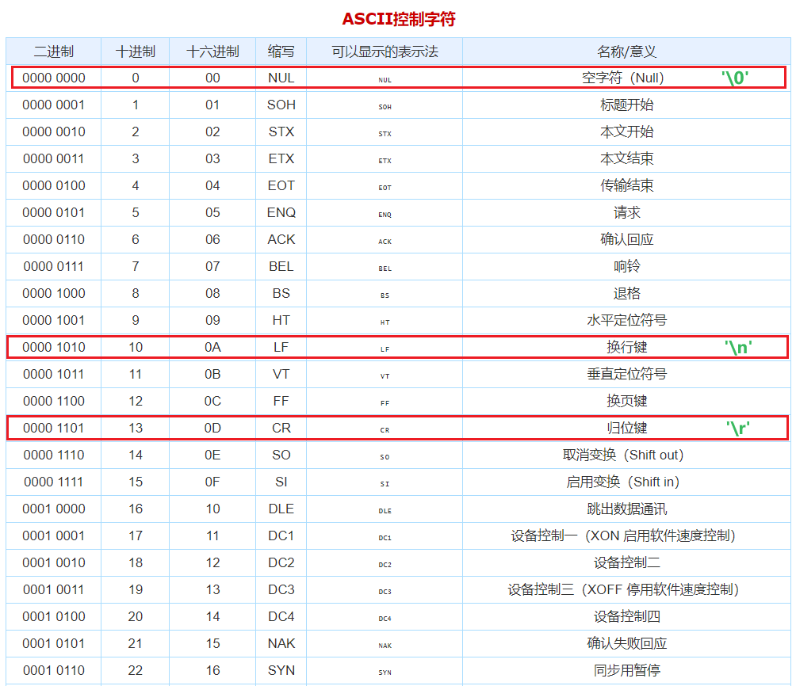
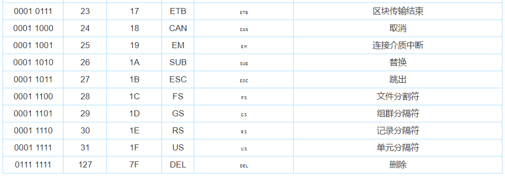
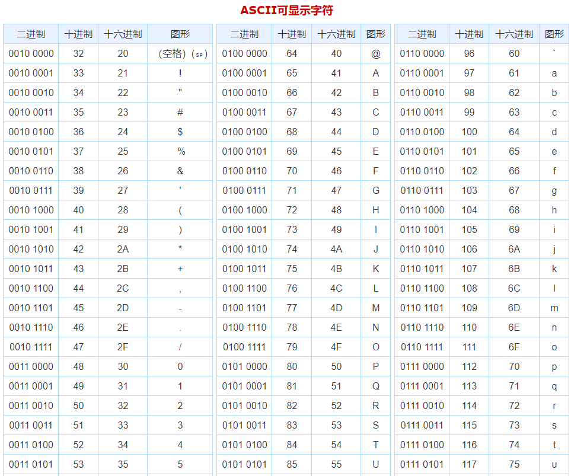
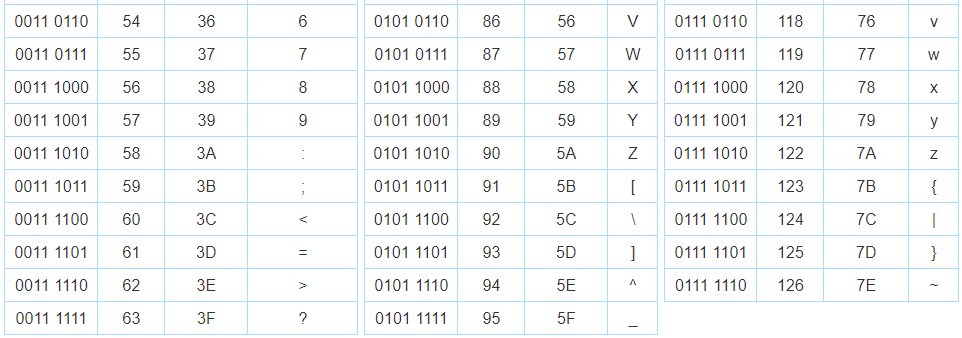

<!DOCTYPE lake>
<p data-lake-id="u3107ce39" id="u3107ce39"><span data-lake-id="ufc8dbd3f" id="ufc8dbd3f">ASCII（American Standard Code for Information Interchange，美国信息互换标准代码）</span></p><p data-lake-id="u8fad4a56" id="u8fad4a56"><span data-lake-id="u134c1f0d" id="u134c1f0d">是基于拉丁字母的一套电脑编码系统。</span></p><p data-lake-id="ud792e1a7" id="ud792e1a7"><span data-lake-id="u1ac2d1aa" id="u1ac2d1aa">主要用于显示现代英语和其他西欧语言。</span></p><p data-lake-id="u2687557b" id="u2687557b"><span data-lake-id="u89e06b59" id="u89e06b59">是现今最通用的单字节编码系统，并等同于国际标准ISO/IEC 646。</span></p><p data-lake-id="u557e0b54" id="u557e0b54"><span data-lake-id="u2fa6559c" id="u2fa6559c">参见：</span><a class="yuque-card-link" href="../../STC8%E5%A2%9E%E5%BC%BA%E5%9E%8B%E5%8D%95%E7%89%87%E6%9C%BA%E5%BC%80%E5%8F%91/%E9%99%84%E5%BD%95%EF%BC%9A%E6%8B%93%E5%B1%95%E7%9F%A5%E8%AF%86%E7%82%B9/ASCII%E7%A0%81%E5%AF%B9%E7%85%A7%E8%A1%A8.html">yuqueinline：yuqueinline</a></p><h1 data-lake-id="TBTwr" id="TBTwr"><span data-lake-id="ue45180ed" id="ue45180ed">1&gt; 控制字符</span></h1><p data-lake-id="u8e041f0f" id="u8e041f0f"></p><p data-lake-id="u04e85edb" id="u04e85edb"></p><hr/><h1 data-lake-id="zMqDc" id="zMqDc"><span data-lake-id="udaa7be62" id="udaa7be62">2&gt; ASCII 显示字符</span></h1><p data-lake-id="u8cb0624b" id="u8cb0624b"></p><p data-lake-id="u1813da19" id="u1813da19"></p><hr/><h1 data-lake-id="sD11f" id="sD11f"><span data-lake-id="u8766db82" id="u8766db82">3&gt; 常用ASCII码</span></h1><h2 data-lake-id="M9XoC" id="M9XoC"><span data-lake-id="u9c551be1" id="u9c551be1">3.1&gt; '\0' 【NULL】空字符</span></h2><p data-lake-id="u1adb4c16" id="u1adb4c16"><span data-lake-id="u54a31121" id="u54a31121">字符串结束标志；</span></p><span class="yuque-card-unsupported">[codeblock]</span><h2 data-lake-id="XVH9G" id="XVH9G"><span data-lake-id="uceef77b0" id="uceef77b0">3.2&gt; ‘\r’【CR】 回车符</span></h2><p data-lake-id="u47f9d84b" id="u47f9d84b"><span data-lake-id="ud0560e25" id="ud0560e25">CR=Carriage Return</span></p><p data-lake-id="u822d57b2" id="u822d57b2"><span data-lake-id="ufa03786b" id="ufa03786b">将光标移动到行首；</span></p><hr/><h2 data-lake-id="VOsEs" id="VOsEs"><span data-lake-id="u1a045961" id="u1a045961">3.3&gt; ‘\n’【LF】换行符 </span></h2><p data-lake-id="u1ad2bc93" id="u1ad2bc93"><span data-lake-id="u9909466f" id="u9909466f">LF = Line Feed</span></p><p data-lake-id="uc600d162" id="uc600d162"><span data-lake-id="u4047bae5" id="u4047bae5">将光标移动到下一行；</span></p><p data-lake-id="u0f92f822" id="u0f92f822"><span data-lake-id="ucad8719e" id="ucad8719e">(new line)</span></p><hr/><p data-lake-id="u0107bde2" id="u0107bde2"><span data-lake-id="u6f463116" id="u6f463116">【windows】每行结尾 &lt;\r \n&gt;, 即&lt;回车&gt;&lt;换行&gt;；</span></p><p data-lake-id="ubd257e5d" id="ubd257e5d"><span data-lake-id="u04c5aac9" id="u04c5aac9">【Mac】每行结尾&lt;\r&gt;, 即&lt;回车&gt;；</span></p><p data-lake-id="u6c7029b8" id="u6c7029b8"><span data-lake-id="ucb9e03e9" id="ucb9e03e9">【Linux】每行结尾&lt;\n&gt;, 即&lt;换行&gt;；</span></p><p data-lake-id="ucd64189c" id="ucd64189c"><span data-lake-id="u9e8e4ef0" id="u9e8e4ef0">​</span><br/></p><p data-lake-id="u9fef0ad1" id="u9fef0ad1"><span data-lake-id="ubad69717" id="ubad69717">C函数Printf 打印字符串时，一般用‘\n’结束，因为Windows系统对文本结束都是&lt;\r \n&gt;,所以输出时插入一个‘\r’;</span></p><p data-lake-id="uf5def866" id="uf5def866"><span data-lake-id="u67c1f157" id="u67c1f157">​</span><br/></p><h2 data-lake-id="nkp10" id="nkp10"><span data-lake-id="u6a219fa4" id="u6a219fa4">3.4&gt; '\a' 蜂鸣</span></h2><h1 data-lake-id="kcD6E" id="kcD6E"><span data-lake-id="u797519ce" id="u797519ce">4&gt; 特殊符号</span></h1><span class="yuque-card-unsupported">[codeblock]</span>